Senior Product Designer · Microsite Checkout · Main Site Checkout
Two connected projects at National Pen. The microsite was the fastest path to proof. The main checkout was the system that needed rethinking.
Microsite · A/B Test · 94% confidence · First 12 days
+17.47%
Mobile Transaction Lift
+13.24%
Conversion Rate Lift
+$15k
Revenue Recovered
02 · The Challenge
Two checkout systems. One had no owner.
Pens.com runs two separate checkout experiences: the main site, a full multi-step flow across their entire product catalog, and the microsite, a stripped-down single-product experience built for email and direct mail campaigns.
The main site checkout was the original project. A Braintree infrastructure migration and a company-wide brand update put it on hold.
Rather than wait, I made a strategic call. The microsite was generating real revenue with no designer in the room — and it was a live experiment platform with a real audience. Anything I learned there could be applied directly to the main site. I proposed owning it.
03 · Discovery
Research first. Then the fix.
Before proposing anything, I needed to understand the full picture. I ran a structured audit across three methods:
01
Heuristic Evaluation
02
Hotjar Behavioral Data
03
Unmoderated User Testing
Then I brought the findings back across two working sessions — with the Experimentation Team, a web developer, and key stakeholders — to align on what was technically feasible and what would move the business needle first.
The picture that emerged: mobile had compounding, systemic friction across 8 steps. Desktop had one structural flaw that was costing conversions every day.
Desktop · One structural flaw
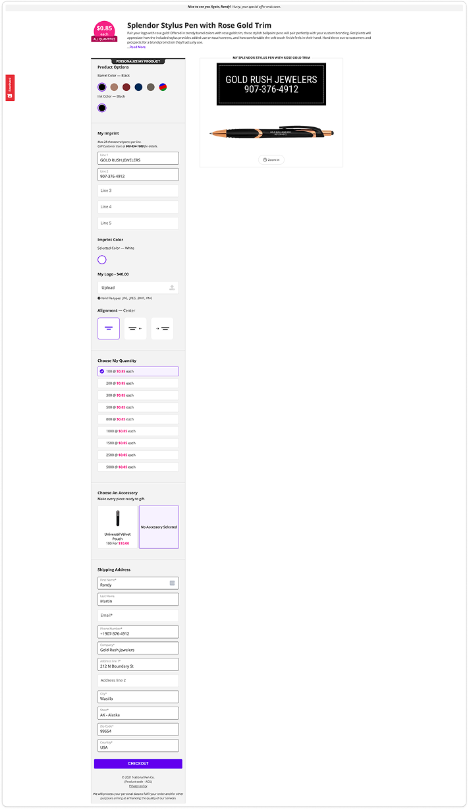
↑ fold
The CTA was buried below the fold. Users who'd finished customization had to scroll past pre-filled information to find the action they came for.
↓Scroll down the screenshot and eventually you'll see the CTA. That's exactly what users had to do too.
Mobile · Compounding friction
8 steps to purchase. Hotjar showed high abandonment throughout, and user testing gave clues to where and why.
Entry
Promo Code
01
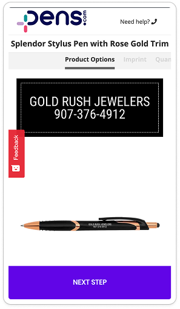
Product Options
02
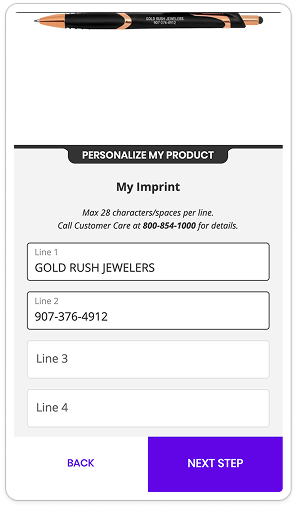
My Imprint
03
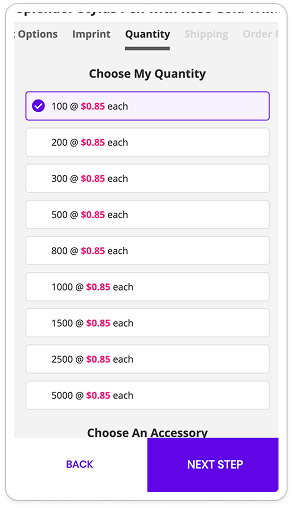
Quantity
! Modal
Upsell
04
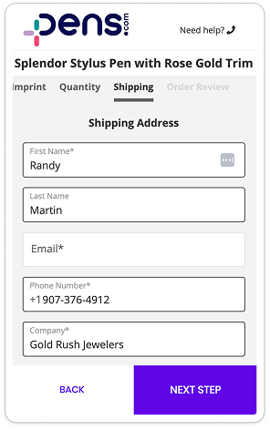
Shipping
! Modal
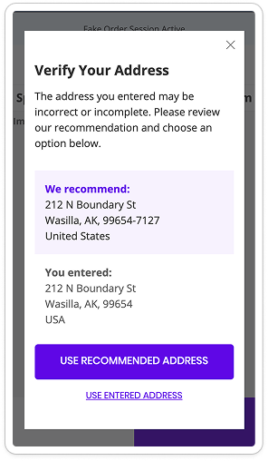
Address verify
05
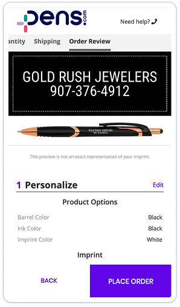
Order Review
Done
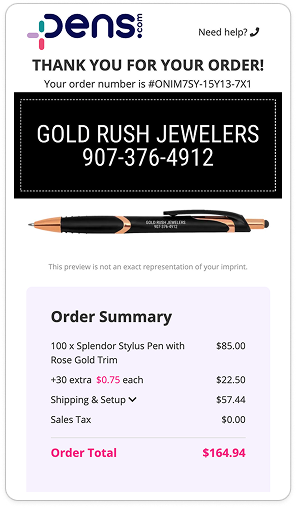
Confirmation
! = unexpected interruption
Applying NNg's 10 usability heuristics, here were the most critical violations, the ones quietly leaking revenue:
Visibility of System Status
The "Blind" Funnel
Violation
Users were forced through a grueling 8-step checkout with no indication of how many steps remained.
Impact
Process fatigue drove abandonment. Not frustration with the product, but with an invisible finish line.
Error Prevention
The "Accidental" Order
Violation
On mobile, "Place Order" tap-targets were positioned where users accidentally triggered them while scrolling.
Impact
Users unintentionally selected "Pay Later" and submitted orders without a final confirmation state, causing accidental conversions and frustrated exits.
Flexibility & Efficiency of Use
The "Buried" CTA
Violation
The primary CTA was buried far below the fold on desktop, invisible until users scrolled past all pre-filled content.
Impact
No quick wins for returning users. Even with imprint and shipping pre-populated, the flow forced redundant interactions before reaching purchase.
Aesthetic & Minimalist Design
Systemic Friction
Violation
Every step was crowded with navigation, promotional banners, and repeated product details that had no role in completing the purchase.
Impact
Each extra element forced a micro-decision: is this relevant to me right now? Users already under friction load abandoned rather than parse content that shouldn't have been there.
Desktop had a glaring issue: the CTA was buried. I scoped the fastest fix: a sticky CTA bar via an A/B testing tool. No engineering required. Just me and two colleagues from the Experimentation Team.
Hypothesis: keep the CTA always visible, conversion goes up. Twelve days later, confirmed. Strong enough that we rolled it out globally as a permanent change.
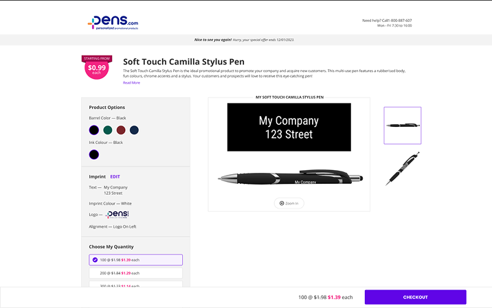
Sticky CTA bar · persistent across scroll · AB Tasty · zero engineering
+$15k
Revenue recovered in the first 12 days · zero engineering involvement, no prior stakeholder buy-in
AB Tasty Dashboard · test results snapshot
Key Results
+13.24%
Conversion rate lift · 94% confidence
+15.21%
CTR on order review · 96% confidence
+$15k
Revenue recovered in first 12 days
Key insight · audience segmentation
Returning customers and new prospects receive fundamentally different experiences via unique URL parameters, with prospect conversion in North America tracking lower. This shaped how every test was scoped: variant impact measured against the right audience segment, not aggregate traffic.
The desktop result did more than bring in numbers. It bought credibility. The Experimentation Team and stakeholders were now actively pulling me in — not the other way around.
I used that to drive a second round of ideation with the Experimentation Team and a web developer: mapping the next wave of A/B tests and critical mobile fixes, then aligning on priority in a working session. The output was a structured backlog, organized by impact and effort, handed off and ready to run.
Experimentation Team Handoff (5 Examples)
Quick Win
Change Default QTY · pre-set 250 units · removes a decision step with near-zero engineering cost
Big Bet
Price transparency at review · surface total cost before the final step · copy + layout only · high trust signal for first-time buyers
Big Bet
Inline Upsell · replace unexpected modal with inline placement · eliminates the biggest drop-off point in the mobile flow
Big Bet
Combine to 3 pages · collapse 8-step flow into 3 · reduce fatigue before users reach payment · mobile only
Ideal
One Page Experience · full checkout re-architecture → single continuous scroll · requires dev sprint · mobile only
Before any concepts, I mapped the checkout system as it actually existed. What I found wasn't one checkout. It was one main website checkout with three other payment portals, each with its own decision tree, UI, and abandonment risk. It was both a UX problem and a business problem. We were supporting in total 3 different types of checkouts: (1) main website (2) payment portals (3) microsite.
Current state · checkout system mapping
Current state · mobile guest checkout flow · 4 pages, multiple branching paths
Additional payment portals · 3 separate systems · each with its own decision tree and abandonment risk
Research foundation · Baymard Institute benchmark · industry best practice mapped against current checkout
Though we were still in the middle of the Braintree Migration and brand changes, neither stopped the work. They just changed what was realistic. I worked with the PM to figure out exactly what we could actually ship and built a scoping document to make those tradeoffs explicit. What I presented to the PM:
01 · The Full Vision
One-page experience
A single continuous scroll that compressed the entire multi-step checkout. Goal: to show what "better" could look like before constraining to what was currently buildable.
02 · The MVP
Same principles. Scoped to reality.
Price transparency, reduced friction, clearer progress — without restructuring the page architecture. Built with the PM to reflect exactly what was shippable within the Braintree migration and marketing constraints.
The vision · one-page experience · click to interact
Mobile
Desktop
North star concept · 8 pages → single continuous scroll · price surfaced upfront · persistent order summary · alignment tool for PM + engineering
PM scoping document · what's changeable given constraints
Annotated for PM · translating design decisions into engineering feasibility within Braintree migration + marketing priority shift
With scope aligned, I produced the final handoff, which included the website checkout and the three payment portals with all the same experience, ready for engineering.
Mobile
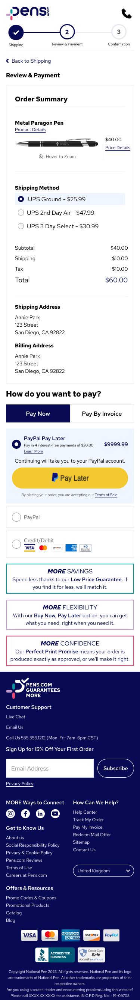
scroll to explore ↑↓
Desktop
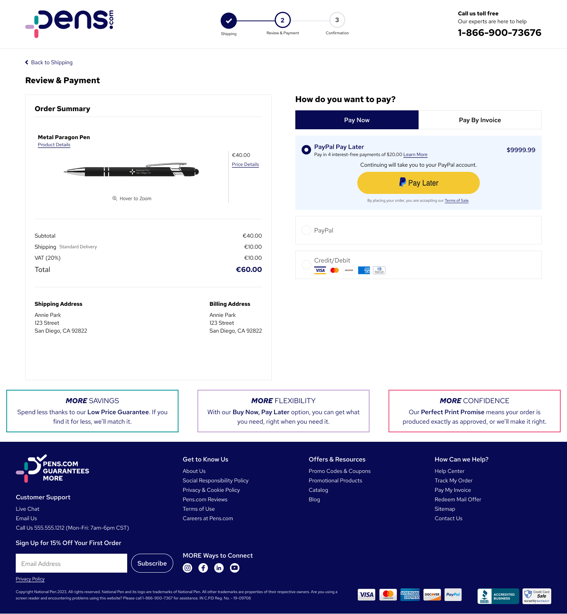
scroll to explore ↑↓
MVP handoff · 3-step progress, price transparency surfaced, payment options clarified · same principles as vision, scoped to reality
Final deliverable · handoff documentation
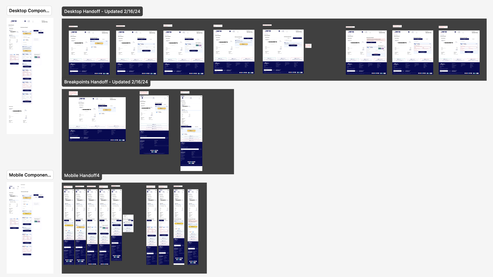
Website checkout · desktop + mobile + breakpoints + components
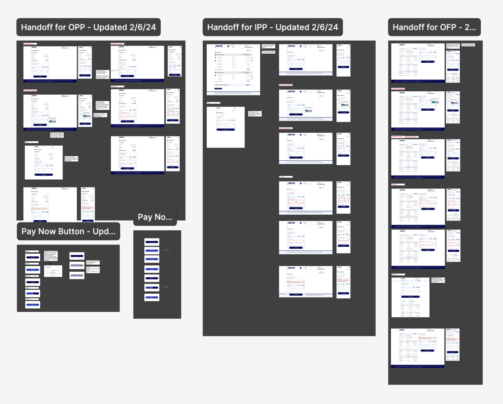
Payment portals · OPP · IPP · OFP
Figma handoff · website checkout + 3 payment portals · screens, states, and components ready for engineering